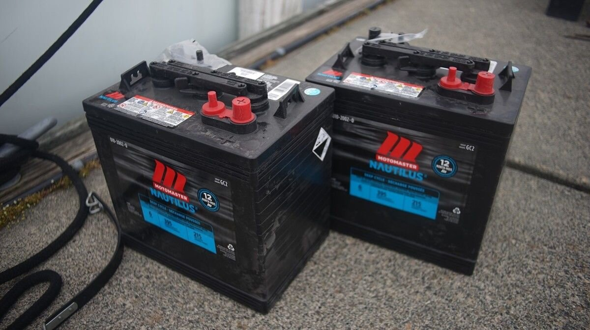

batteries
Lead-acid batteries are found in cars, trucks, boats and home-scale renewable energy systems. They come as flooded (wet), or sealed (gel).
Lead-acid batteries are the most common, the most durable and the least expensive type of battery used on boats. The caps on each cell are vented so that gases (hydrogen) released during charging and discharging can escape. Each cell is filled with electrolyte (dilute sulfuric acid), enough to cover the series of lead plates nestled inside. Each cell must be topped off with distilled water (water with no trace minerals) to the fill line on a regular basis. How often depends on the age of the batteries, how much you use them, and on ambient temperature(batteries may require more water in warmer climates). As a general rule, we check our batteries once a month, more often if they batteries are older.
Recycling batteries
Lithium ion batteries have higher energy density and longer cycle life, but fewer than 1% of them are recyclable, and the processes for recovering lithium for reuse in battery applications are still inefficient (2022). By contrast, lead acid batteries are now recycled with more than 99% efficiency in the United States, Europe and Canada. Lead acid batteries have been around for a long time, so recycling has greatly evolved. When one buys a new car battery, the old one must be returned for recycling. Because the architecture of lead acid batteries has not changed substantially over the years, recyclers know how to do it quickly and efficiently. As of now, lithium batteries pose major challenges for the recycling industry [source].
Amp hours
All batteries are labeled with a variety of information, notably their amp-hour rating. Amp-hour describe the charge capacity of a battery, or the amount of current drawn/delivered for a certain amount of time. Because the output of most appliances are rated in watts, watt-hours and kilo-watt hours are easier to use than amp-hours.
Say a battery is 215 Ah and that a device continuously draws 215 A for an hour, the battery will be completely depleted after that time. If a device draws 107 A, the battery will be depleted in 2 hours. If 43 A is drawn every hour for 5 hours, the battery will fully discharged after 5 hours, etc. If you have a solar panel that feeds the 215 Ah battery 15 A every hour, it would take 14 hours to charge it back in full.
To convert from amp-hours to watt-hours, multiply the battery's amp-hour rating by its voltage. For example, if a 12 V battery has a rating of 215 Ah (for 20 hours), the hourly rate would be 10.75 Ah:
10.75 Ah x 12 V = 129 Wh
Which means that the battery allows for 129 W per hour.
Note that battery capacity changes depending on consumption. If a battery is discharged quickly, the lower its capacity. Never discharge a battery over 50 percent.
| State of charge (lead acid batteries) | Voltage |
| 100% | 12.73V |
| 90% | 12.62V |
| 80% | 12.50V |
| 70% | 12.37V |
| 60% | 12.24V |
| 50% | 12.10V |
| 40% | 11.96V |
| 30% | 11.81V |
| 20% | 11.66V |
| 10% | 11.51V |
Killing a battery
There are many ways to kill a battery. The main way, is by not adding back enough distilled water to each cell (note that a single dead cell can compromise a whole battery). Other ways include undercharging too often, too many deep discharges, heat, and corroded connections. Overcharging a lead acid battery isn't too problematic, as long as there is always enough water to cover the plates.
Safety checklist
Battery safety checklist, courtesy of otherpower:
- Wear safety glasses (with side shields), nitrile gloves, and work clothes.
- Keep a box of baking soda nearby to neutralize acid spills.
- Wear a dust mask or respirator when cleaning corrosion from battery terminals.
- Lift batteries only by their built-in handles, or use a battery lifter.
- Wrap the wrench you'll be using for tightening battery terminals with electrical tape to prevent accidental shorts.